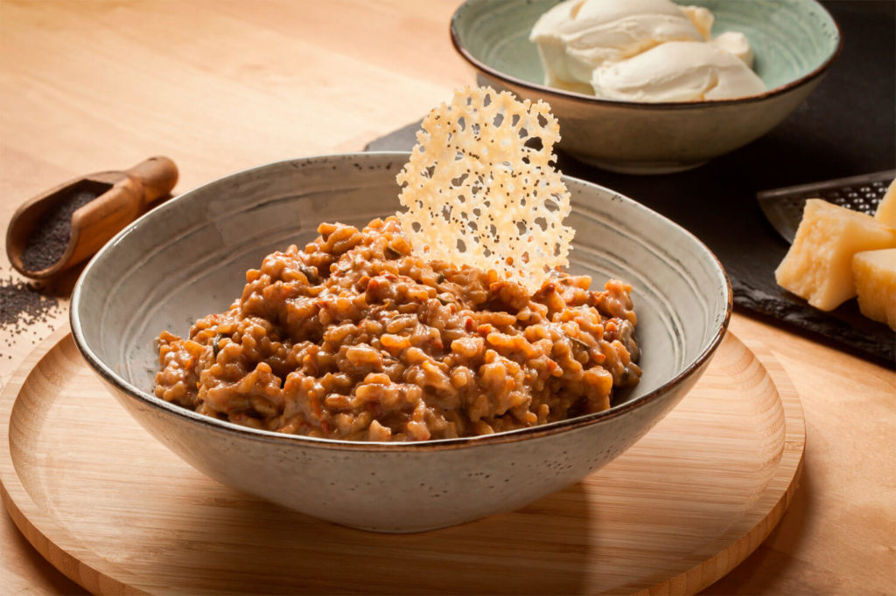
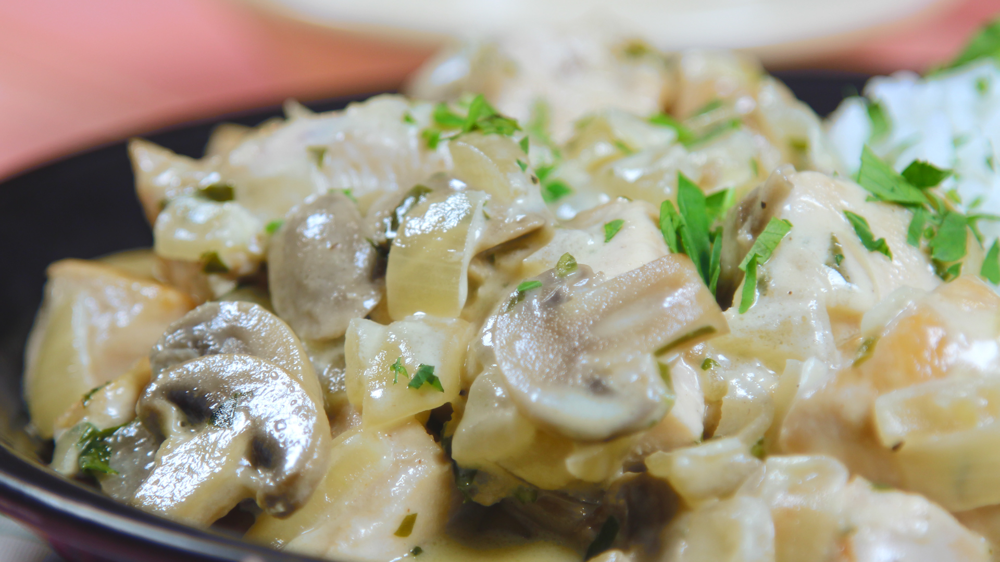

Pasta con crema de camarones

Ingredientes
- 200 gr. de espaguetis
- 300 gr. de camarones limpios
- 4 dientes de ajo picado
- 2 chiles rojos picados
- 2 cdas. de jugo limon
- Perejil picado
- Oliva, sal y pimienta.
- 1 pote de crema
Preparación
Cocinar la pasta al dente y reservar en un bowl con oliva.
En sartén con oliva agregar los dientes de ajo y el chile picados, cocinar sin que se quemen. Agregar los camarones y cocinar 3/4 minutos moviendo. Añadir las gotas de jugo de limón y si se desea un poco de ralladura. Condimentar con sal y pimienta. Agregar crema.
Agregar la pasta, saltear todo junto y espolvorear con mucho perejil picado.
Risotto mediterraneo
Ingredientes
- Caldo de verduras (caliente)
- 3 tazas (de café peq) de arroz (no vaporizado)
- 1 tomate rallado
- 1 calabacín
- 1 trozo de pimiento rojo en trocitos pequeños
- 20 gr de mantequilla
- 1 taza(misma medida que la del arroz) de buen vino blanco
- Aceite de oliva virgen
- 1 cebolla pequeña
- 1 diente de ajo
- 30 gr de queso parmesano (mejor recién rallado) y otro poco para adornar en lascas
- Un poco de perejil o cebollino picado para emplatar
- Sal y pimienta
Preparación
En una sartén grande, ponemos la manteca junto con el aceite, calentamos y echamos la cebolla picada y el diente de ajo laminado.
Añadimos el tomate rallado y sofreimos un rato. Salpimentamos.
Incorporamos el pimiento en trocitos y el calabacín cortado en rodajas muy finas, sin pelar. Rehogamos bien e incorporamos el arroz, damos unas vueltas para que tome el sabor y echamos la taza de vino blanco.
Removemos hasta que se haya absorbido todo el caldo, entonces echamos una taza de caldo caliente y removemos continuamente hasta que desaparezca, así vamos agregando caldo caliente hasta que el arroz esté hecho, pero un poco al dente.
En este punto agregamos el parmesano rallado y removemos para que se integre y se funda. Servimos caliente, adornado con unas lascas de parmesano y un poco de perejil o cebollino picado.
Pollo con champiñones y panceta
Ingredientes
- 6 fetas tocino picado
- 3 supremas de pollo
- 1 cucharadita de sal
- 1 taza champiñón en láminas
- 1/3 taza vino blanco
- 1 taza de crema/ nata
- Sal, pimienta y perejil picado
Preparación
Dorar la panceta en sartén, retirar y eliminar el exceso de grasa de la sartén.
Ahí mismo dorar las supremas de pollo previamente condimentadas con sal y pimienta. Una vez que resulten listas retirar.
En la misma sartén dorar los champiñones en láminas, añadir el vino blanco y dejar evaporar el alcohol
Incorporar la crema de leche, las supremas y el tocino crocante. Espolvorear con perejil picado y servir.